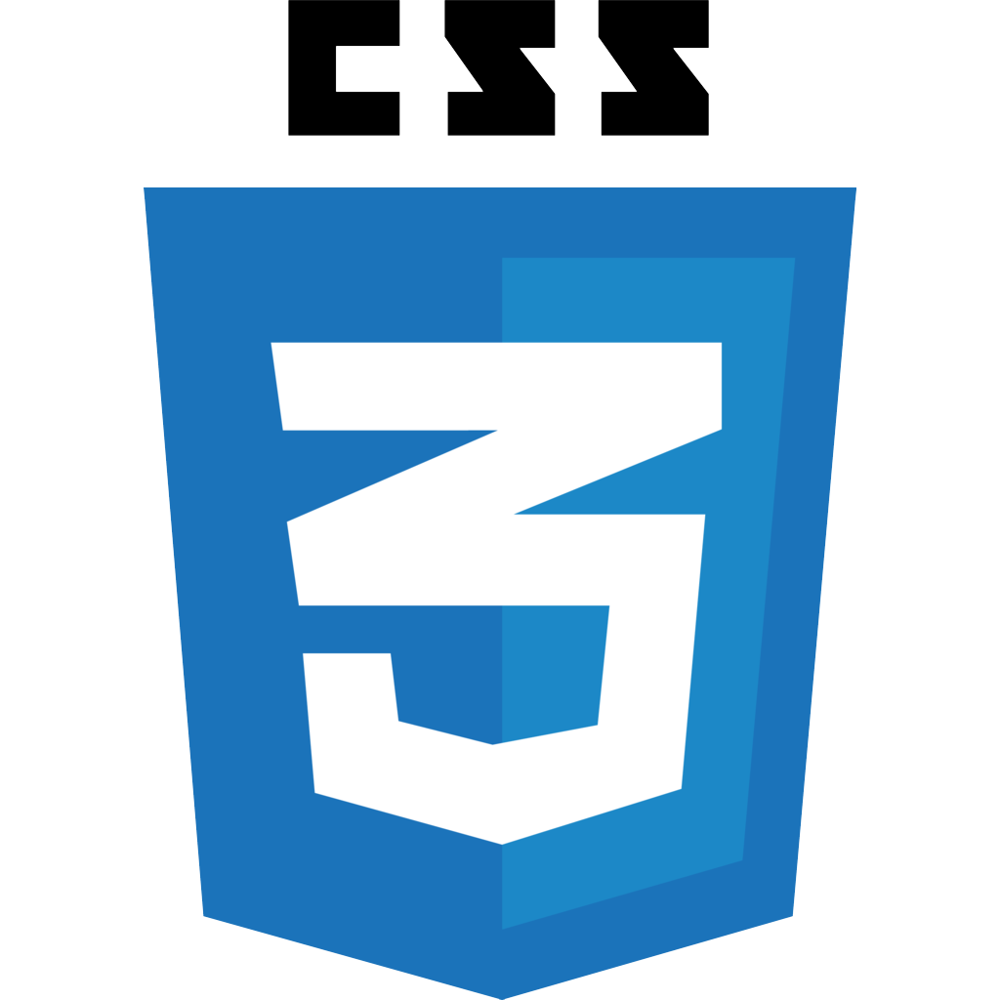
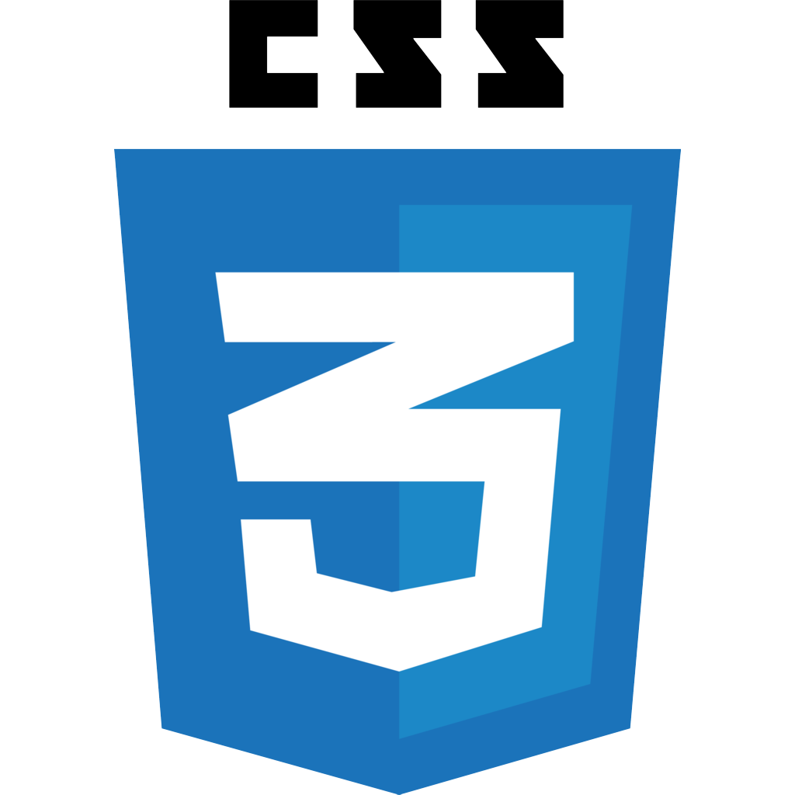

Career Site for Ball State University Career Center
Lead Designer
The KEY Careers website helps undecided freshman at Ball State University find their career interests and explore the different majors Ball State offers. KEY Careers concludes with a fun activity where students make an 'Action Plan' based on Career Center activities.
I was the Lead Designer on the Admin Panel, and worked closely with Lead Developer Josh Schoen on implementing user filters in Angular JS so an admin can sort through students based on name, major, or how far they progressed through the website. In addition to designing all of the Admin Panel, I also contributed at all points in the design process for the rest of the website as well. To ensure the website and Admin Panel met requirements for user accessibility, Josh and I were in constant contact with the Career Center, iterating multiple times to achieve the final product.
Our goal was to make the site as interactive and engaging as possible. Through analytics, we found that 25% of the entire freshman class participated in KEY Careers site, which was the largest response the Career Center has gotten.


 
